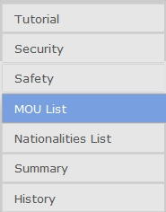
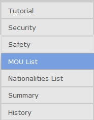

Tutorial
The RISK Configuration Tool will enable you to specify how you want the RISK score calculated.
Specify RISK score settings
Using the tabs on the navigation bar, specify how you want to weigh each security and safety field. Click on the Security tab to begin.
The Security tab panel will be displayed. Specify boundaries for Priority I and Priority II using the text boxes. Priority I recommends inspecting vessel before arrival in port. Priority II recommends inspecting vessel while in port. You can also specify the max value for the sliders in "Max Points". Click on the "Set" button to set these changes.


Adjust the sliders left or right to the desired levels. To specify a high risk field, move the slider to the right. To specify a low risk field, move the slider to the left. To specify a field as Priority I or II, move the slider to -1 or -2, respectively.
Do the same for the Safety tab panel.
Next, specify which Black-Gray-White MOU List to use by selecting a list from the drop-down menu.

The Security tab panel will be displayed. Specify boundaries for Priority I and Priority II using the text boxes. Priority I recommends inspecting vessel before arrival in port. Priority II recommends inspecting vessel while in port. You can also specify the max value for the sliders in "Max Points". Click on the "Set" button to set these changes.
Adjust the sliders left or right to the desired levels. To specify a high risk field, move the slider to the right. To specify a low risk field, move the slider to the left. To specify a field as Priority I or II, move the slider to -1 or -2, respectively.
Do the same for the Safety tab panel.
Next, specify which Black-Gray-White MOU List to use by selecting a list from the drop-down menu.

Request RISK score calculation
After you are done adjusting the RISK score settings, click on the Summary tab.
This will show you a summary of what you have chosen as well as a choice to save these settings or request the RISK score to be calculated.
When you are satisfied with the results, click on the "Calculate" button to request the RISK score to be calculated using the current settings. A summary will be displayed once the calculations are done.

You may also save the settings to load at a later time by clicking on the "Save" button. It will prompt you to enter a name for the entry. To access your saved entries click on the History tab on the navigation menu.
This will show you a summary of what you have chosen as well as a choice to save these settings or request the RISK score to be calculated.
When you are satisfied with the results, click on the "Calculate" button to request the RISK score to be calculated using the current settings. A summary will be displayed once the calculations are done.
You may also save the settings to load at a later time by clicking on the "Save" button. It will prompt you to enter a name for the entry. To access your saved entries click on the History tab on the navigation menu.
Save RISK score settings
To access saved RISK score settings select the History tab. This will bring up the History panel.

All saved entries will be displayed. You have the option of loading, renaming, or removing each saved entry. Loading an entry will load the saved settings but will not calculate the RISK score. You must press the "Calculate" button on the Summary panel to see the RISK score.
All saved entries will be displayed. You have the option of loading, renaming, or removing each saved entry. Loading an entry will load the saved settings but will not calculate the RISK score. You must press the "Calculate" button on the Summary panel to see the RISK score.
Help
For a list of terms and definitions, click on the Definitions tab.
ISPS Compliance
Specify point value definition:
Max Points
Assign point value for each category below:
Tip: Slider value of: '-2' means Priority I (inspect before arrival in port), '-2' means Priority II (inspect while in port)
PSC Safety & Environmental Compliance
Specify point value definition:
Max Points
Assign point value for each category below:
Tip: Slider value of: '-2' means Priority I (inspect before arrival in port), '-2' means Priority II (inspect while in port)
MOU List
Select which set of Black-Gray-White list to use: